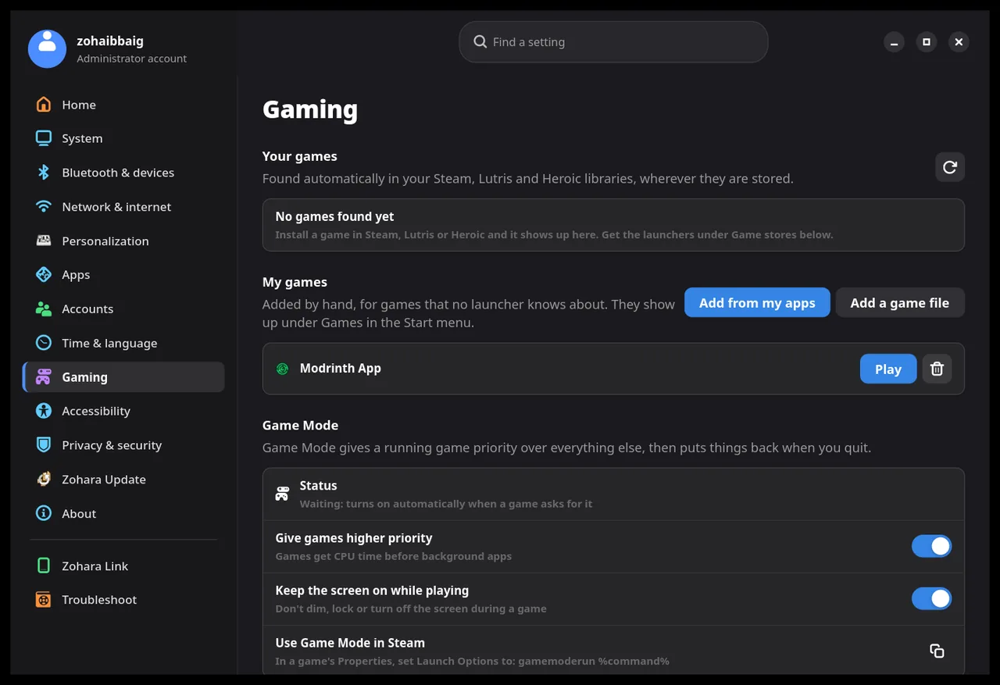

Play Windows games without Steam in the middle.
The layers that run Windows games live in the operating system. You turn them on in Settings, then double-click a game. Steam is not needed for that, and a Steam, Lutris or Heroic game still gets the same per-game settings.
In testing. Everything on this page is built and being tested in the development channel. It is not in the 1.1 ISO, and it has been tried on one laptop (Intel and NVIDIA graphics), not on AMD.


Windows programs just open.
Turn on “Open Windows programs with a double-click” in Settings (it is on by default in the newest builds). Then .exe, .bat, .msi and Windows shortcuts open from your file manager.
- Proton-GE is Valve’s Proton plus extra fixes for more games. It is downloaded when you ask (about 565 MB) and checked against the published checksum before it is unpacked.
- Plain Wine is the other choice, for programs that do better without Proton.
- One Windows folder per game, so a game’s settings and saves stay together. Programs an installer made can be found and added as games, with the program’s own icon.
- Right-click a Windows file to run it once with Proton-GE, with Wine, or on the dedicated graphics chip, or to add it as a game.
- When something fails to start, you get a notice with an “Open the log” button, and every game keeps its own log.
An unknown program stays in its box.
Wine and Proton can read and delete everything in your home folder. Double-clicking makes it easy to run something you have not checked, so a program that is not one of your games runs in a protected space.
- It sees an empty home folder: no Documents, no browser data, no SSH keys, no Steam login.
- It can write only to its own Windows folder and its own program folder.
- It is made with bubblewrap, the technology Flatpak uses, and can be switched off per game, per start, or for everything.
- Tested by running a real program through Proton-GE: it could not read a secret file placed in the home folder, and a file it wrote there never reached the real disk.
Every game, every launcher.
One settings window for games you added by hand and for the ones Steam, Lutris and Heroic found.
Graphics chip
Automatic, or the dedicated one on a laptop with two.
Game Mode and MangoHud
Priority while the game runs, and a frame-rate overlay.
DXVK and options
DirectX through Vulkan on or off, extra game options and environment variables.
Proton-GE version
Pin an older version for one game, or use the newest.
Windows components
Install Visual C++, DirectX 9 files, fonts or .NET into one game’s Windows folder.
Reset
Start a game with a fresh Windows folder (the old one goes to the trash).
For Steam games, the choices are written to Steam’s own launch options while Steam is closed. For Lutris and Heroic they are written to each launcher’s own per-game settings. A backup of the file is kept the first time.
The right Java for the version.
- Shows the system Javas that are installed and the ones launchers such as Modrinth bring with them.
- Minecraft 1.20.5 and newer needs Java 21, 1.18 to 1.20.4 needs Java 17, older versions need Java 8.
- Install or switch the system Java with one button (your password is asked).
- A launcher installed as a Flatpak cannot see the system Java and uses its own, which the page says.